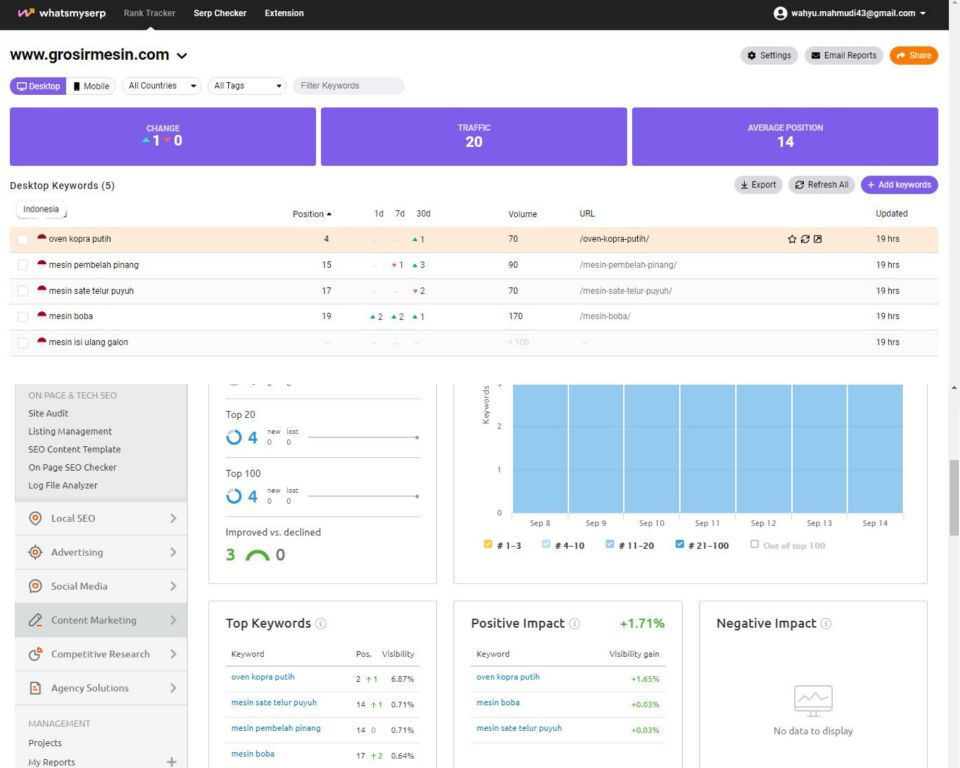

Selamat Datang di Ruang Kreasi

Berkreasi Menggunakan Corel Draw
Membuat Stiker Kelas

Kreasi Kedua
Membuat Poster Peringatan Belasungkawa

Eksplorasi Kamera
Parangtritis di Awal Tahun

Beautiful in Glamour

Sunset Hunter

Keyphrase untuk Penulisan SEO
Hasil Penulisan dengan Keyphrase SEO Friendly ON-Page dan OFF-Page

Copyright © 2021 Wahyu Mahmudiyanto